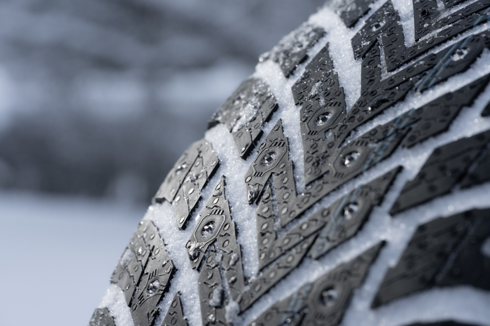

Winter Tires: When to Switch and What to Buy
The temperature rule, the snowflake symbol, and why four tires beat two every time.

When to switch
The rule is temperature, not the calendar. Winter tires grip better once the average daily temperature drops below 7°C (45°F). In most of Canada and the northern US, that means late October to early November. Waiting for the first snowfall means waiting in line at the tire shop.
Winter vs all-season vs all-weather
- Winter tires use a softer rubber that stays flexible in the cold, with deep tread that bites snow. Best stopping distance on snow and ice.
- All-season tires are a compromise — fine in mild winters, outmatched in real cold and snow.
- All-weather tires carry the mountain snowflake symbol and can stay on year-round. A good middle ground if you can't store a second set.
The mountain snowflake
Look for the three-peak mountain snowflake symbol on the sidewall. It means the tire passed a snow traction test. M+S alone is not the same standard.
Four, not two
Always fit four matching winter tires. Two on the front only makes the back end loose in a slide — the most dangerous setup on winter roads.
Watch: how to change to winter tires
Storing your summers
Clean them, stack them flat in a cool, dark, dry place, away from solvents and electric motors. Bag them if you can. Check pressures before they go back on in spring.
What it costs
A set of four winter tires for a sedan or small SUV typically runs $500–$1,000 before mounting. Steel rims ($50–$80 each) save your alloys from salt and make seasonal swaps cheaper.
Related reading: When should I switch to winter tires in Ontario? · How long do winter tires last?